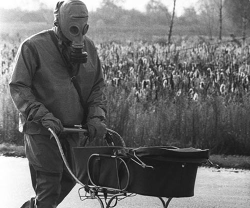

|1986-2019|
Чернобилската авария е тежка промишлена авария, възникнала на 26 април 1986 година в съветската Чернобилска атомна електроцентрала. Тя се приема за най-тежката авария в историята на ядрената енергетика. Аварията предизвиква облак от радиоактивни отпадъци, който преминава над части от СССР, Източна Европа и Скандинавия. Обширни райони в днешните Украйна, Беларус и Русия са замърсени, а около 200 хил. души са евакуирани от родните си места.
Веднага са приети в болница 213 души, от които умират 31. 28 процента от тях умират от остра лъчева болест. Повечето са пожарникари и спасители, които се опитват да овладеят аварията, неуведомени за опасността от радиоактивния дим. Пряко от взрива загива само един човек. От зоната на инцидента са евакуирани общо 135 000 души, в това число и 45 000 от съседния град Припят.
Десет дни след аварията е установена „забранена зона“ в радиус от 30 km около централата и започва евакуаця на населението в нея.
Битката за овладяването на аварията, и предпазването от появата на втори взрив, който би залял цяла Европа с радиоактивен прах, така както е залят сега Припят, е струвала на СССР 18 милиарда тогавашни американски долара (приблизително 50 милиарда днешни), изсипани за по-малко от 6 месеца
По време на работите по разчистването се използват дистанционно управляеми машини, които да преместват най-радиоактивните остатъци, но те търпят неизправности под тежките условия. Така, най-радиоактивните материали биват изчиствани с лопати от чернобилските ликвидатори от военните части, които носят тежка защитна екипировка (наричани биороботи от военните). Тези войници могат да работят само по 40 секунди на покрива на централата, поради изключително високата радиация
Пострадалите от аварията на АЕЦ в Чернобил и участниците в ликвидирането на последиците от трагедията настояват властите в Украйна да им осигурят адекватна социална защита. Това заяви пред ТАСС днес, когато се навършват 31 години от чернобилската катастрофа, Владимир Войтов - председател на украинското обществено сдружение на инвалиди "Съюз Чернобил в Украйна" (СЧУ), предаде агенцията.
Повечето инвалиди и т. нар. ликвидатори, обеззаразявали района, страдат от тежки заболявания, "но не могат да дочакат конкретни стъпки за засилване на социалната защита", а новоприетите законодателни мерки "имат само ритуален характер"
Чернобил създава чудовища със своята мощна радиация. Едно от тези чудовища е Кракът на слона. Той представлява огромна маса от ядрено гориво,смесено с големи киличества бетон и пясък. Формирало се е при експлозията и се счита за най-опасното нещо на Планетата. Нивото на радиация, която то излъчва при неговот формиране е 10 000 рентгена на час, а само 100 или повече са достатъчни за вашия фатален край. Въпреки че, сега радиационното му излъчване е по-малко от тогавашното то пак е достатъчно за да ви довърши като при 30 секунди облъчване получавате замайване и гадене до седмица , а до 2 минути - диария, високa температура и кръвоизливи в тялото. В близост до него в продължение на 300 секунди се считате за пътник до 2 дни.